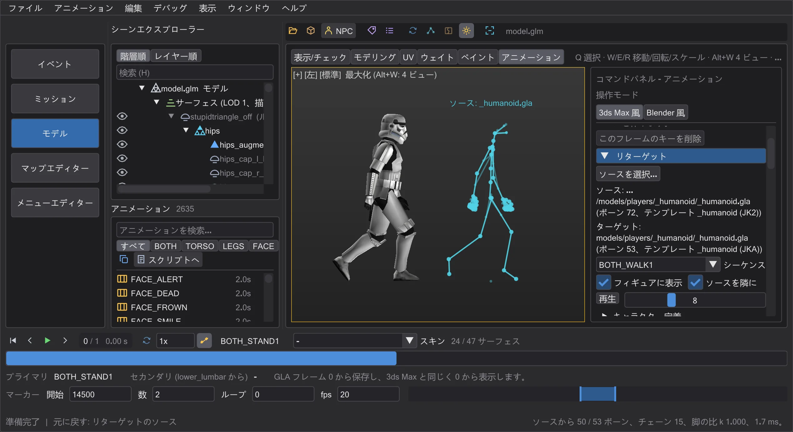
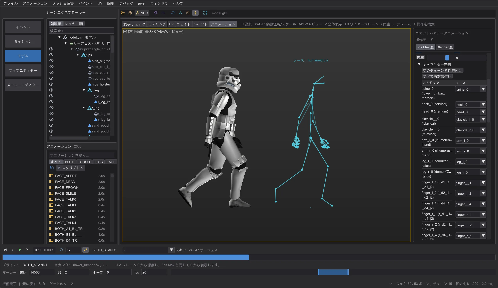
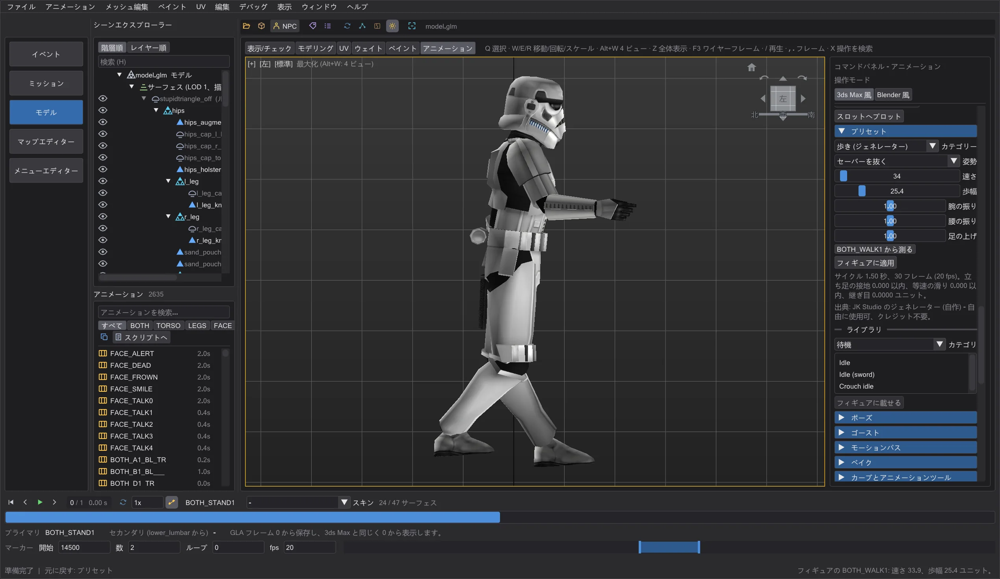

モデルタブ: リターゲット
別のスケルトンのアニメーションをフィギュアに与えます - JK2 から JKA、JKA から Movie Duels のフィギュア、人の歩きをクリーチャーや自作リグへ - 同じポーズ、対応付けたチェーン、拡縮した歩幅、地面に着いた足で、結果は選んだ GLA にベイクします。
ソースを選ぶ#
モデルタブでフィギュアを開き、Animation の領域へ。コマンドパネルのロールアウト リターゲット (オートフィジックスの下)、メニュー Animation > リターゲット、ビューの右クリック (Control Rig > リターゲット)、または検索 (X、Blender 風は F3) で ソースを選択 を選びます: ゲームデータの任意の GLA かディスク上の .gla。次にソースの シーケンス (animation.cfg の 1 行) を選びます。リターゲット実行 で結果がすぐフィギュアに表示され、ソースはスケルトンとして隣に表示されます。再生 で両方を一緒に再生します。フィギュアはゲームと同じく圧縮 (compressBone) した結果を表示します: 見えるものがゲームの再生です。

チェーンとリグのテンプレート#
両方のスケルトンはチェーンで記述されます - 背骨、首、頭、鎖骨、腕 (上腕、前腕、手)、脚 (太もも、すね、足、つま先)、指、付属。3ds Max 風では表は キャラクター定義 (MotionBuilder と同じ)、Blender 風では ボーンマッピング と呼びます。既知のスケルトンはテンプレートから埋まります: JKA _humanoid (ボーン 53)、JK2 _humanoid (72)、ベースゲームの 34 の独自スケルトン (ランコア、ワンパ、AT-ST、ハウラー、トーントーン、プロトコルドロイドほか全部、ファイル名とボーン名で認識)、他のソフトのリグ用に HumanIK/Mixamo (mixamorig:...)、3ds Max Biped、CAT。その他のスケルトンにはボーン認識からチェーンを提案します。同じ名前のチェーンが対応付けられ、ボーン数が違えばチェーンの長さに沿って配分、指は番号で。どの行も手で変えられ (* が付く)、空のチェーンを対応付け は手で決めた行を残します。ツイストボーン (lhumerusX、lradiusX、lfemurX) は前腕や太ももの回転を分け合い、前腕の下にある指とセーバーのタグは手と一緒に動きます。Mixamo のファイルは同梱しません - 自分のアカウントでダウンロードしてください。テンプレートが対応付けます。
共通のポーズ#
転送の前に、ソースとフィギュアは同じポーズで立つ必要があります (3ds Max 風は キャラクタライズのポーズ、Blender 風は レストポーズ) - そうでないと腕や脚がねじれます。JKA のスケルトンは A ポーズ (上腕が約 48° 下向き)、他のリグはよく T ポーズです。T ポーズ と A ポーズ は背骨と首を垂直に、腕を横または 45° 下に、脚を真下にし、各部位を最小の回転で合わせます。ロールアウトに 2 つのポーズのずれが表示されます。フィギュアのボーンは X/Y/Z ±5 のボタンで微調整し、組を名前を付けて保存して後で使えます。
骨盤、FK、IK、ルート#
ステップはリストの順に、Unreal と同じように動きます: 骨盤 は骨盤をソースと同様に動かし、k = フィギュアの脚の長さ / ソースの脚の長さで拡縮します - 長い脚は大きく歩き、足は滑りません。FK チェーン は各ボーンを共通ポーズに対してソースのボーンと同じように回し、長さはフィギュアのまま。IK 手/足 は手足をソースの拡縮した位置へ引き寄せます (足の Reach と 手の Reach は 0 = FK のみから 1 = ぴったりまで、HumanIK の Reach と同じ)。足の接地を保持 はソースの足が立っている間、足を着地点に保ちます。ルートモーション は model_root と Motion をソースと同様に拡縮して動かします。矢印でステップの順を変えられます。k を手で決めれば歩幅が変わります。

確認とベイク#
ステップの下でロールアウトが結果を測ります: 足の滑り は足が立っている間の最大の水平移動 (ゲーム単位) で、ソースの同じ値 (拡縮後) と並べて表示し、棒がフレームごとに示します。ジャンプ はフィギュアのボーンがソースよりずっと大きく回ったり動いたりするフレームで、番号をクリックすると表示します。スロットへプロット (Blender 風は スロットへベイク) はフレームをゲームと同じくソースの animation.cfg の fps で圧縮し、スロット (BOTH_WALK1、BOTH_CIN_3 ...) に置きます。その後 GLA とスロット でマップ GLA (カットシーン、BOTH_CIN_1...)、MOD の _humanoid.gla、または独自 GLA をビルドします - 新しいスケルトンの独自 GLA はシングルプレイでのみ読み込まれます。プレビューをオフにすれば、フィギュア自身のアニメーションとベイクした GLA はバイト単位で元どおりです。
プリセット: 歩きと走りのジェネレーター#
ロールアウト プリセット (メニュー Animation > プリセット と検索にも) は独自のジェネレーターで歩きと走りのサイクルを作るので、ライセンスの問題はありません: カテゴリー と 姿勢 (普通、重い、忍び足、負傷、セーバーを抜く) を選び、速さ (ゲームの NPC は歩き 90、走り 300 ユニット/秒)、フィギュア自身の BOTH_WALK1 / BOTH_RUN1 から測った 歩幅、腕の振り、腰の振り、足の上げを設定して フィギュアに適用。サイクルはすぐフィギュアで再生されます。立ち足は正確に地面にあり、ゲームの歩きと同じく等速で後ろへ滑ります (フィギュアを動かすのはゲーム)。継ぎ目なくつながり、両足が地面に届く必要がある所で骨盤が下がります。リターゲットしたアニメーションと同じく BOTH_WALK1 または BOTH_RUN1 のスロットにベイクします。他の作者のライブラリはまだ同梱していません: Quaternius Universal Animation Library (CC0) と 100STYLE データセット (Ian Mason、CC BY 4.0) には、そのファイル形式 (glTF/FBX と BVH) の読み込みが必要です - リリースノートを参照。
